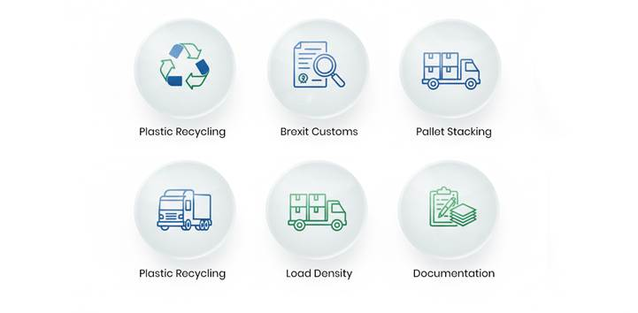

Empty Plastic Bottle Supply from Netherlands to UK
Background:
This study is based for the consignment of empty plastic bottles from EU
to UK being referred the client from Clarusto Logistics trusted Client and
partner. The client is engaged into plastic recycle undertaking in Worcester
(UK) and so is looking for the supply of recycled empty plastic bottles with a
palletized weight of 3500-3800 kilograms, counting 70 pallets in a single
delivery. Clarusto’s experienced team and efficient networking conducted a survey
within UK and EU and hence finalized the most compatible option from EU and
processed the entire logistic further to continue and grow promising and
sustainable company profile.
Objectives:
Clarusto Logistics primary objective is to sustain the entire procedure seamlessly
meeting up the priorities and ensuring errorless measured consignments taking
place.
· Consented deadlines to be met within 3-5 days oof duration.
· Optimized transportation cost efficiency.
· Effective border and custom clearance for end-to-end planned delivery.
· Strategic load optimized pallet transition for cubic efficiency.
· Concerned to avoid any deformation though shrinking.
· Prevention against plastic consignment to delivery in original form.
· Pre analysis of routing and transit surveys.
Challenges:
As usual, with strategically designed cargo neutralizing most commonly
sought-out errors, Clarusto Logistics is geared up for facing the challenges assumed
before any freight is initialized to happen.
· Assumed custom complexity followed by Brexit.
· Time keeping and delivery deadlines considering client’s production line.
· Evaluated delay risks.
· EU palletizing norms for excessing standards.
· Transport load density for ratio of bulk yet lightweight logistics.
· Pallet utilization and optimized stacking resulting in deforms.
· Documentation and correct checklists for commercial invoicing and classification of product.
·
Transit vehicle configuration and planning for
loading/offloading. 
Strategic Flow Process:
For effective and assured logistic movement, Clarusto Logiatics
professional have given a planned solution for all stages of transition with no
haulage and breakages.
· Correct mode of transport i.e. combined load proforma within FTL.
· Ensuring maximum space utilization which results in reducing cost per pallet.
· Efficient cubic palletization for minimizing crush.
· Anti shrink wrapping for delivering original form of supply.
· Maximizing vertical stacking.
· All declaration authorized documentation including export-import fulfilling norms.
· Real time tracking and regular follow up with the consignee.
· Correct Route survey and execution to meet scheduled date and hours.
Learnings and Advantages:
With every logistic approach and execution, comes learnings of all forms;
minor or major. Clarusto Logistics is growing and improving its work efficiency
with appropriate learnings and experiences incurred and updating its workforce.
· Strategy for mixed FTL and LTL method has provided improved cost efficiency.
· Calculated client’s production timeline and improvised inventory provided a promised supplying endeavor.
· Designed and planned stacking significantly reduced transportation costs.
· Surveyed and multimodal route planning has strengthened confidence for future logistic approach.
· Built up client satisfaction plays a vital role for business growth and networking.
Conclusion:
This study highlights the key factors for enabling sustainable
and satisfactory consignment deliverance mainly through a smart monitored
movements at all levels across EU-UK border clearance. Considering planned
stacked palletization brings the credit for optimized space utilization and
friendly inspection undertaken. Road freight solutions is executed successfully
with its correct load efficiency and improves reliability when real time
co-ordination is highly preferred. With no freight damage and quick custom
cleared logistic flow gives a pilot design for upcoming projects. Value added
logistics like cross dock, delivery management and time scheduling with POD not
only signifies a prominent business conduction but a long run partnered supply
chain progress.